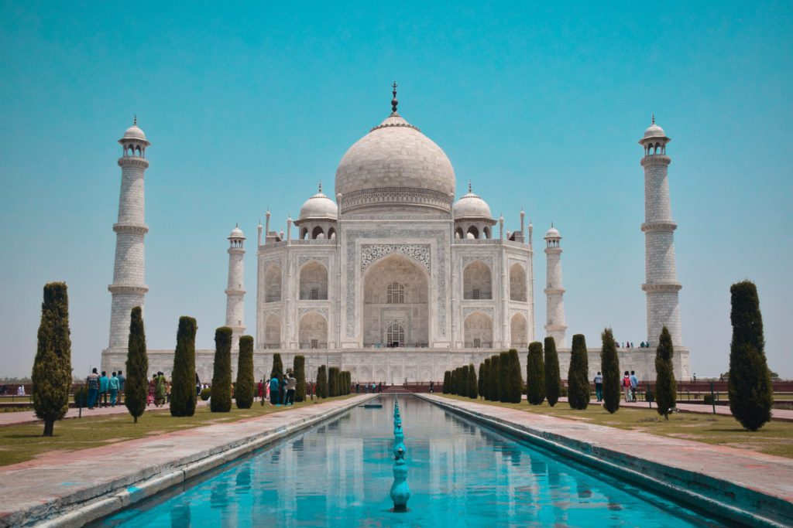

La dernière merveille de la liste est le Taj Mahal, une œuvre architecturale et preuve d’amour jamais égalée. Ce mausolée fut construit en Inde au 17ème siècle par l’empereur moghol Shah Jahan pour sa défunte et bien aimée épouse, Mumtaz Mahal. Le Taj tient sa renommée de son histoire bouleversante mais également de la prouesse esthétique qu’il représente. Tout de marbre blanc vêtu, incrusté de pierres précieuses et orné des versets du Coran : on ne peut que tomber sous le charme de cette majestueuse structure qui se reflète dans des bassins d’eau turquoise. Le Taj Mahal constitue une étape quasi obligatoire si vous souhaitez effectuer un séjour au Rajasthan !
Contrairement aux 7 merveilles du monde antique, les 7 merveilles du monde moderne sont toutes accessibles aux visiteur·se·s aujourd’hui. Certain·e·s d’ailleurs s’en font même une liste des lieux qu’il·elle·s espèrent voir dans leur vie. Pourquoi ne pas également explorer les autres sites nominés pour les 7 merveilles du monde moderne ? Direction l’Alhambra de Grenade, la Tour Eiffel ou encore la statue de la Liberté !